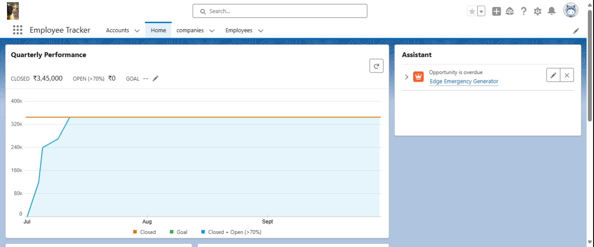

Project Description: Personal Website using HTML and CSS
Key Features
Designed and developed a professional personal website using HTML and CSS to showcase skills, projects, and professional achievements.
Implemented a modern, responsive design for optimal viewing across devices, featuring sections for portfolio display, resume download, and contact information.
Enhanced online presence and personal branding through effective visual presentation and user-friendly navigation.
.png)
Employment Tracker App on Salesforce
Developed and deployed an Employment Tracker application on the Salesforce platform to streamline HR operations.
Designed to manage employee information, track performance metrics, and facilitate seamless communication between departments.
Implemented custom objects, workflows, and reports to automate processes such as onboarding, performance reviews, and employee engagement surveys.
Enhanced productivity and data visibility through Salesforce's robust cloud-based infrastructure, ensuring compliance with organizational policies and regulatory requirements.
